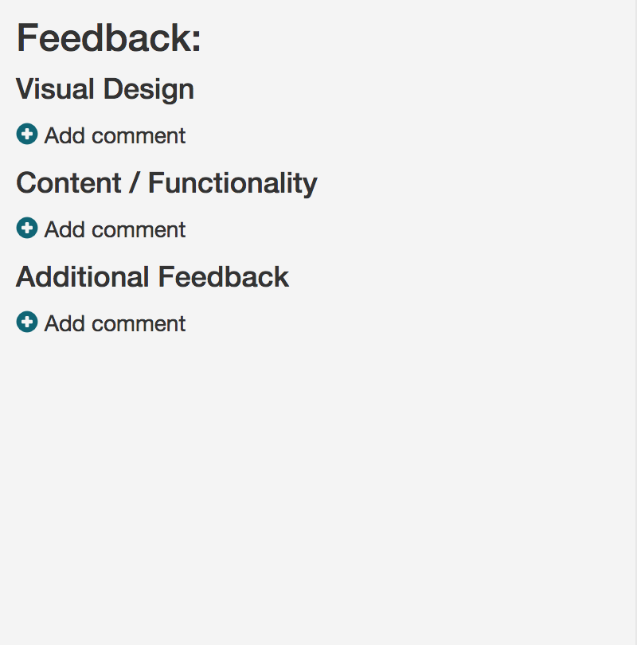
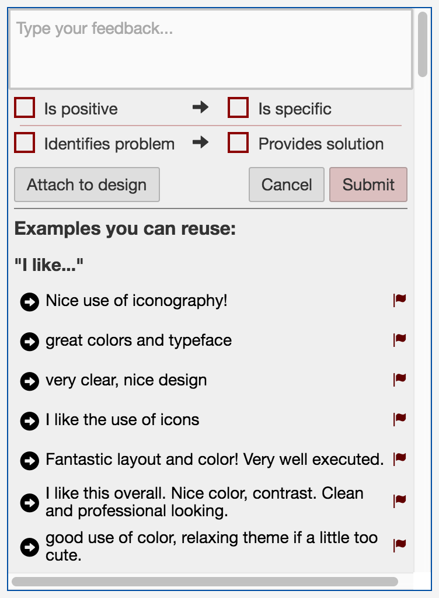
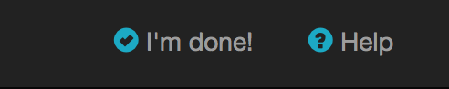

<div class="modal-dialog">
	<div class="modal-content">
		<div class="modal-header">
			<button id="close_help" type="button" class="close" data-dismiss="modal">&times;</button>
			<h4 class="modal-title">Welcome to CritiqueKit!</h4>
		</div>
		<div id="help_page_0" class="modal-body first_help">
			Thank you for participating in this study! Please take a moment to review the consent form below, 
			and indicate your agreement at the bottom.
			<div id="consent_form">
				<h4>Informed Consent Form: Study of a learning system</h4>
				<p>FOR QUESTIONS ABOUT THE STUDY, CONTACT: Scott Klemmer, 9500 Gilman Drive, La Jolla, CA 92093-0436, srk@ucsd.edu</p>
				<p>DESCRIPTION: You are invited to participate in a research study on learning and creativity.
				If you consent to participating in this study, we will log your interaction with our system, such as when you visit the program or website, and what pages you visit, written responses you submit through the system, etc. If you choose, you can also participate in surveys that will help us better understand your use of this tool, and improve the system. We will also correlate your software usage with class progress.</p>
				<p>You may also complete some surveys related to the project (such as a post-project survey on your experience) that you fill out on a different website. If you complete these surveys we may correlate your system usage with information on such surveys. </p>
				<p>You must be 18 or older to participate in this research study. If you are less than 18, you cannot participate in the research study. Please see ALTERNATIVES TO PARTICIPATION below. </p>
				<p>The information you provide us will help us create better learning systems in the future. </p>
				<p>RISKS AND BENEFITS: There are no risks associated with this study beyond those encountered in daily life.  We cannot and do not guarantee or promise that you will receive any benefits from this study. Your participation will help us improve learning systems, and hopefully, education in the future.</p>
				<p>TIME INVOLVEMENT: Typically, you will spend between 15 min and an hour using this system.</p>
				<p>PAYMENTS: You will be not be financially compensated for your participation.</p>
				<p>COSTS: There are no costs for participating in this study.</p>
				<p>DATA RETENTION, SHARING, AND DELETION: This system will record your work, interactions and other similar information. We will not share your personally identifying data (such as your name and email address) with people outside our research team.</p>
				You can ask that we delete your data. To do so, delete your account, or email us. If you do, please understand that not all data can be deleted. For instance, if your peers’ grades are determined by your assessment, we cannot delete them.  </p>
				<p>ALTERNATIVES TO PARTICIPATION: You are not required to participate in this study. </p>
				<p>SUBJECT'S RIGHTS: If you have read this form and have decided to participate in this project, please understand your participation is voluntary and you have the right to withdraw your consent or discontinue participation at any time without penalty or loss of benefits to which you are otherwise entitled. You can choose to discontinue your participation by deleting your account, or by unchecking the “I consent to participating in this research study” box below.  You have the right to refuse to answer particular questions. Your individual privacy will be maintained in all published and written data resulting from the study. </p> 
				<p>RIGHT TO DISCONTINUE STUDY: The protocol director reserves the right to discontinue your participation in the study at any point for any reason.</p>
				<form>
					<input name="consent" id="consent_yes" type="radio">
						I am at least 18 years of age, and I consent to participating in this research study
					</input><br/>
					<input name="consent" id="consent_no" type="radio">
						I do not consent to participating in this research study (or am under 18).
					</input>
				</form>
			</div>
		</div>
		<div id="help_page_1" class="help_pages modal-body">
			<p>You can use this website to provide feedback on your peers' work, and to see the feedback other
			peers have left on your work.</p>

			<p>Some tips: Good feedback is...</p>
			<ul>
				<li><b>Specific</b>. E.g., instead of <i>"looks great!"</i>... 
					try, <i>"I like the layout of this section, it is simple and 
					makes it easy to find what I need."</i></li>
				<li><b>Actionable</b>. E.g., instead of <i>"This header is boring, 
					make it better"</i>... try, <i>"This header is too simple. 
					Try adding a gradient to the background and making the text 
					bolder so it stands out."</i></li>
			</ul>

		</div>
		<div id="help_page_2" class="help_pages modal-body">
			<div class="row">
				<div class="col-sm-8">
					<h4>Using the feedback interface:</h4>
					<p>The interface you will be using to provide feedback is on the righthand side of the window.
						To add a feedback comment, click "Add comment" under the category for which your feedback best applies.
					</p>
					<p>For example: 
						<ul><li>if you want to give feedback on the font choices for the site, choose
							the <b>Visual Design</b> category.</li>
						<li>If you want to give feedback on the description of the restaurant, choose 
							the <b>Content / Functionality</b> category</li>
						<li>If you have feedback to give that doesn't seem to fall under either of the 
							above categories, choose <b>Additional Feedback</b></li>
						</ul>
					</p>
				</div>
				<div class="col-sm-4">
					
				</div>
			</div>
		</div>

		<div id="help_page_3" class="help_pages modal-body">
			<div class="row">
				<div class="col-sm-8">
					<h4>Using the feedback interface:</h4>
					<p>Once you click "Add a comment", the feedback interface will open as shown.</p>
					<p>The checkboxes below the text box show some criteria to follow for your feedback: 
						positive and specific, and/or stating a problem and a solution. As you type, 
						these checkboxes will turn green ( <span class="glyphicon glyphicon-ok"></span> )
						when you satisfy the criteria.
						<span class="show_help"
							onclick="switchHelpImage(3, 'feedback_checks.png', 'feedback_box.png', 'show');">
							<span class="glyphicon glyphicon-circle-arrow-right"></span><b> Show Me</b></span>
						<span class="hide_help" 
							onclick="switchHelpImage(3, 'feedback_box.png', 'feedback_checks.png', 'hide');">
							<span class="glyphicon glyphicon-circle-arrow-right"></span><b> Back</b></span>
						</td>
					</p>
					<p>If you disagree with one of the checkboxes (e.g. you wrote something positive, but the 
							positive checkbox stays red), simply click on it to correct it. This information will 
							improve our algorithm!
					</p>
				</div>
				<div class="col-sm-4">
					
				</div>
			</div>
		</div>

		<div id="help_page_4" class="help_pages modal-body">
			<div class="row">
				<div class="col-sm-8">
					<h4>Using the feedback interface:</h4>
					<p>To attach your feedback comment to a specific location on the website, click "Attach to design".
						You will then be prompted to choose a location.
						<span class="show_help"
							onclick="switchHelpImage(4, 'feedback_location.png', 'feedback_box.png', 'show');">
							<span class="glyphicon glyphicon-circle-arrow-right"></span><b> Show Me</b></span>
						<span class="hide_help" 
							onclick="switchHelpImage(4, 'feedback_box.png', 'feedback_location.png', 'hide');">
							<span class="glyphicon glyphicon-circle-arrow-right"></span><b> Back</b></span>
						</td>
					</p>
				</div>
				<div class="col-sm-4">
					
				</div>
			</div>
		</div>

		<div id="help_page_5" class="help_pages modal-body">
			<div class="row">
				<div class="col-sm-8">
					<h4>Using the feedback interface:</h4>
					<p>The "Examples you can reuse" section shows feedback that has previously been given. You may 
						browse these
						for inspiration, or reuse feedback by clicking the arrow button beside it. This will insert it 
						into the text box.
						<span class="show_help"
							onclick="switchHelpImage(5, 'feedback_insert.png', 'feedback_box.png', 'show');">
							<span class="glyphicon glyphicon-circle-arrow-right"></span><b> Show Me</b></span>
						<span class="hide_help" 
							onclick="switchHelpImage(5, 'feedback_box.png', 'feedback_insert.png', 'hide');">
							<span class="glyphicon glyphicon-circle-arrow-right"></span><b> Back</b></span>
					</p>
					<p>If you see a bad example (e.g. it is poorly written or doesn't make sense), you can flag it
						by clicking the Flag button beside it ( <span class="glyphicon glyphicon-flag flag_btn"></span> ).
					</p>
				</div>
				<div class="col-sm-4">
					
				</div>
			</div>
		</div>

		<div id="help_page_6" class="help_pages modal-body">
			<div class="row">
				<div class="col-sm-8">
					<h4>Using the feedback interface:</h4>
					<p>As you type, if your feedback matches one of the examples, it will show up as a suggested autocomplete.
						To use it, press the right arrow <span class="glyphicon glyphicon-arrow-right"></span> 
						on your keyboard to do the autocomplete. 
						There may be multiple matching examples, in
						which case you can browse through them using the 
						up <span class="glyphicon glyphicon-arrow-up"></span> and down 
						<span class="glyphicon glyphicon-arrow-down"></span> arrow keys, before selecting one 
						to autocomplete.
						<span class="show_help"
							onclick="switchHelpImage(6, 'feedback_autocomplete.png', 'feedback_box.png', 'show');">
							<span class="glyphicon glyphicon-circle-arrow-right"></span><b> Show Me</b></span>
						<span class="hide_help" 
							onclick="switchHelpImage(6, 'feedback_box.png', 'feedback_autocomplete.png', 'hide');">
							<span class="glyphicon glyphicon-circle-arrow-right"></span><b> Back</b></span>
					</p>
					<p>Some examples have blanks you can fill in where the original words were very specific. Click on 
						the blank to type your own word before inserting the comment.
						<span class="show_help"
							onclick="switchHelpImage(6, 'feedback_blank.png', 'feedback_box.png', 'show');">
							<span class="glyphicon glyphicon-circle-arrow-right"></span><b> Show Me</b></span>
						<span class="hide_help" 
							onclick="switchHelpImage(6, 'feedback_box.png', 'feedback_blank.png', 'hide');">
							<span class="glyphicon glyphicon-circle-arrow-right"></span><b> Back</b></span>
					</p>
				</div>
				<div class="col-sm-4">
					
				</div>
			</div>
		</div>

		<div id="help_page_7" class="help_pages modal-body">
			<div class="row">
				<div class="col-sm-8">
					<p>You are ready to go! Once you close this, you will be shown the option
					to either view the feedback on your submission, or provide feedback on your classmates' work.
					When you are done viewing or giving feedback, click "I'm done" or refresh the page to see the
					options again.</p>
					<p>If you ever want to see these instructions again, click "Help" on the top menu.
					</p>
				</div>
				<div class="col-sm-4">
					
				</div>
			</div>
		</div>

		<div class="modal-footer">
			<button id="prev_help" type="button" class="btn btn-secondary">Previous</button>
	        <button id="next_help" type="button" class="btn btn-primary disabled">Next</button>
	        <button id="done_help" type="button" class="btn btn-primary" data-dismiss="modal">Done</button>
      	</div>
	</div>
</div>